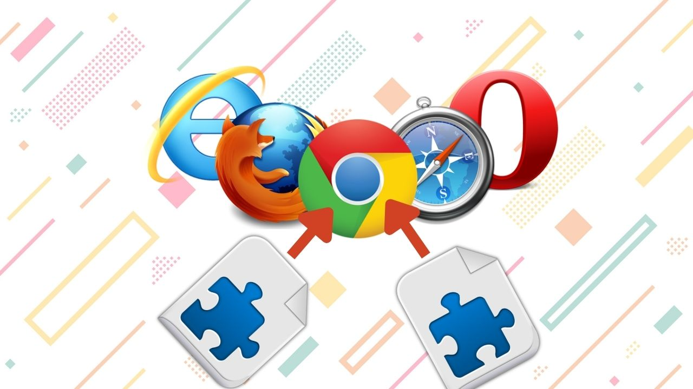

Introduccion
La energía eólica es una forma de energía renovable que se obtiene a partir del viento, mediante el aprovechamiento de la energía cinética generada por el movimiento de las masas de aire. Esta energía es transformada generalmente en energía eléctrica a través de aerogeneradores, y constituye una de las fuentes más utilizadas dentro del conjunto de energías limpias.
El término «eólico» proviene del latín aeolicus, que a su vez deriva del griego Αἰολικός Aiolikós, que significa ‘perteneciente o relativo a Eolo’, dios de los vientos en la mitología griega.[
Para aprovechar la energía cinética del viento y convertirla en energía eléctrica, es necesario, tal y como ya hemos comentado, el uso de un aerogenerador. El óptimo aprovechamiento de estos gigantes —suelen tener entre 80 y 120 metros de altura— depende de la fuerza del viento. Por ello, los parques eólicos, que agrupan un gran número de aerogeneradores y hacen posible la obtención de esta energía en grandes cantidades, deben implantarse en lugares donde la presencia del viento sea predominante.
Ventajas
La energía eólica ofrece numerosos beneficios, tanto para las compañías que apuestan por ella como para la sociedad al ayudar a minimizar el impacto del cambio climático:
- Limpia: Al no requerir ningún proceso de combustión, se trata de una energía con unas bajas emisiones de gases de efecto invernadero (GEI), los principales culpables del calentamiento global.
- Inagotable: El viento es un recurso ilimitado, así como su aprovechamiento siempre y cuando haya corrientes de aire suficientes.
- Barata: Tanto el coste por kW producido como su mantenimiento es bastante bajo. En zonas donde el viento sopla más fuerte el beneficio es aún mayor.
- Bajo Impacto: Los parques eólicos se instalan tras un riguroso proceso de estudio y planificación. Además, se buscan zonas despobladas para evitar el efecto negativo en los habitantes.
- Empleos verdes: Según la Agencia Internacional de las Energías Renovables (IRENA), la energía eólica ya emplea hoy a más de 1,2 millones de personas y el número de empleos verdes no dejará de aumentar.
Ultimas noticias:
Analisis de Clipclaps: Una absoluta decepción
La revision de la aplicacion "Clipclaps" fue realizado y tristemente el resultado fue lamentable. entre los detalles a destacar se tienen:
Fallos
- Poca seguridad
- Tiempos tardados para cumplir metas
- Eventos de ganancia engañosos
- Pagos directamente inexistentes
No se recomienda usar la aplicacion. si deseas mas detalles puedes ver el video informe aqui:
Informe clipclaps
Extensiones de navegador que te pueden servir en tu dia a dia!

Las extensiones de navegador, son una serie de complementos que nos permiten mejorar la experiencia de uso de nuestros navegadores agregando y/o mejorando caracteristicas a nuestros navegadores, permitiendo capacidades mejoradas y acordes con nuestras necesidades
Hemos recopilado para su provecho, una pequeña lista de extensiones que seguramente les serán utiles en el dia a dia, y que incluso pueden garantizar una experiencia de navegacion mas segura a la hora de acceder a la basta red de internet.
Extensiones que pueden servirte:
- Urban VPN: Conexion segura a traves de internet
- Browser Guard: Un guardián que nos protegerá de lso peligros de la red
- Dark reader: Modo oscuro personalizable para tu navegador
- Shazam: Reconoce la musica que estes escuchando con un click
- Guardar imagen como: Guarda imagenes con el formato que desees
- Nimble capture: Capturador de imagenes y video con caracteristicas extra
Puedes ver una descripcion mas precisa de las extensiones en nuestro video en YouTube:
Extensiones para ti